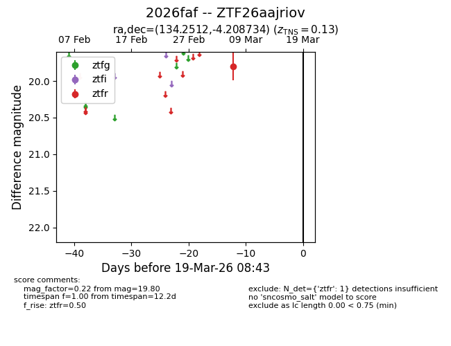
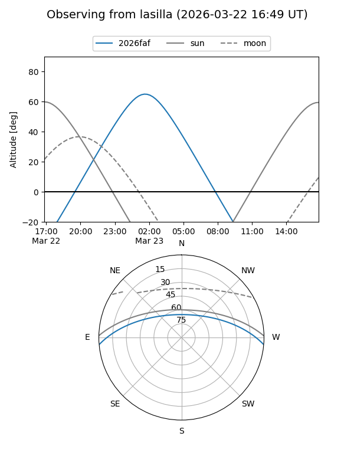
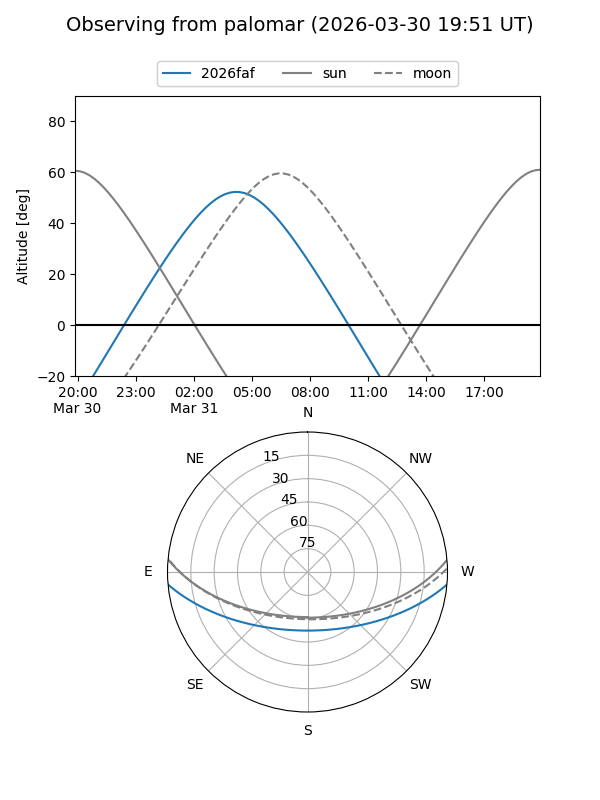

2026faf
Target 2026faf at 2026-03-19 08:45
Aliases and brokers:
FINK: link
Lasair: link
ALeRCE: link
TNS: link
YSE: link
alt names
ZTF26aajriov (ztf,fink_ztf)
2026faf (tns,yse)
Coordinates:
equatorial (ra, dec) = 134.2512,-4.20873
equatorial (HMS+DMS) = 08:57:00.30,-04:12:31.44
galactic (l, b) = (232.4751,+25.39575)
Flags:
confirmed ia
Photometry:
last ztfr=19.80
1 ztfr detections
Lightcurve

Visibility


Additional plots